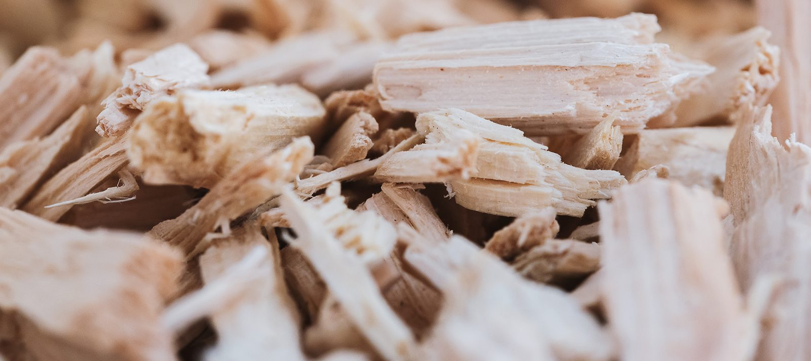

Küchen
Zwei aktuelle Küchen: Vollholz und schlichtes Weiß – jede mit ganz besonderen Funktionen.
Schauraum & Einblicke
Unsere Referenzen zeigen Ihnen einen kleinen Einblick, was unsere Tischler möglich machen. Am schönsten ist es allerdings, wenn Sie Material, Beschlag und Stoff selbst in der Hand halten.
In unserem Schauraum tut sich was: Wir haben aktuell zwei neue Küchen. Einmal in Vollholz gehalten und einmal im schlichten Weiß. Wer genauer hinsieht, wird merken, dass jede Küche ganz besondere Funktionen mitbringt.
Wenn Sie sich davon überzeugen möchten, dann schauen Sie einfach bei uns vorbei. Gerne beraten wir Sie persönlich bei uns vor Ort. Zusätzlich sind textile Inneneinrichtungen ausgestellt.

Neu: Bildergalerie
Klicken Sie ein Bild an, um es groß zu sehen.
Was Sie im Schauraum sehen
Zwei aktuelle Küchen: Vollholz und schlichtes Weiß – jede mit ganz besonderen Funktionen.
Vorhänge, Raffrollos, Polster und Kissen aus Stoffen des Traditionshauses Backhausen.
Holzarten, Oberflächen und Stoffe zum Vergleichen – schon in der Planungsphase.